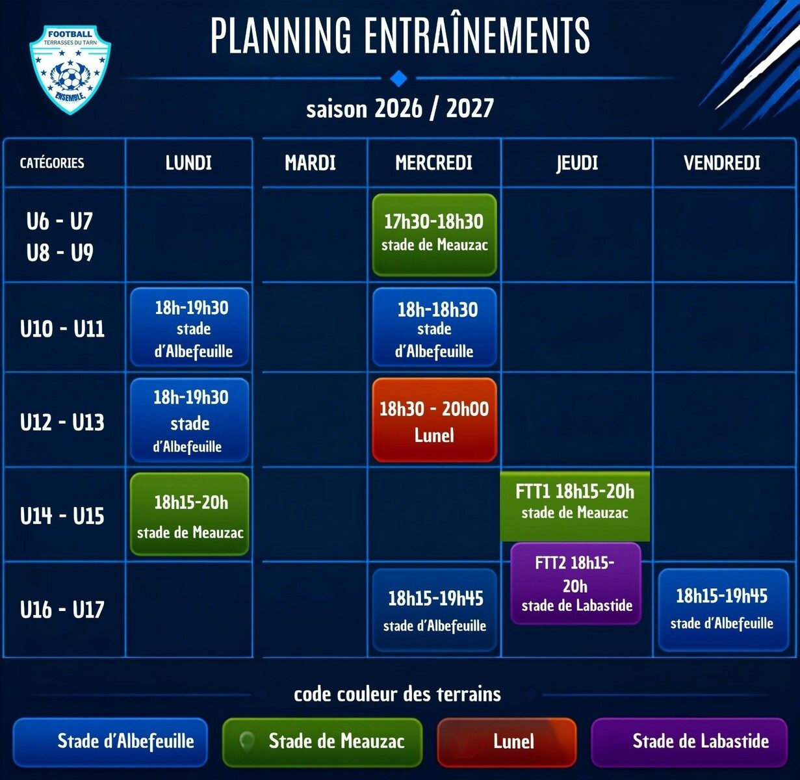

Équipes
Du premier ballon aux U17
École de foot, catégories jeunes, féminines et vétérans : trouve ta place.
Saison 2026-2027
Choisis ton équipe
Survole (ou touche) une carte pour voir les jours, horaires et lieux d'entraînement.
Horaires d'après le planning officiel 2026-2027. Les éducateurs seront indiqués par le club.
Planning
Entraînements de la semaine


Visuel : Football Terrasses du Tarn
Ensemble, pour le club !
Chausse les crampons, rejoins la famille FTT
Venez essayer le foot : filles et garçons, de U6 à U17, et une équipe vétérans pour l'ambiance du vendredi soir.
Nous rejoindre